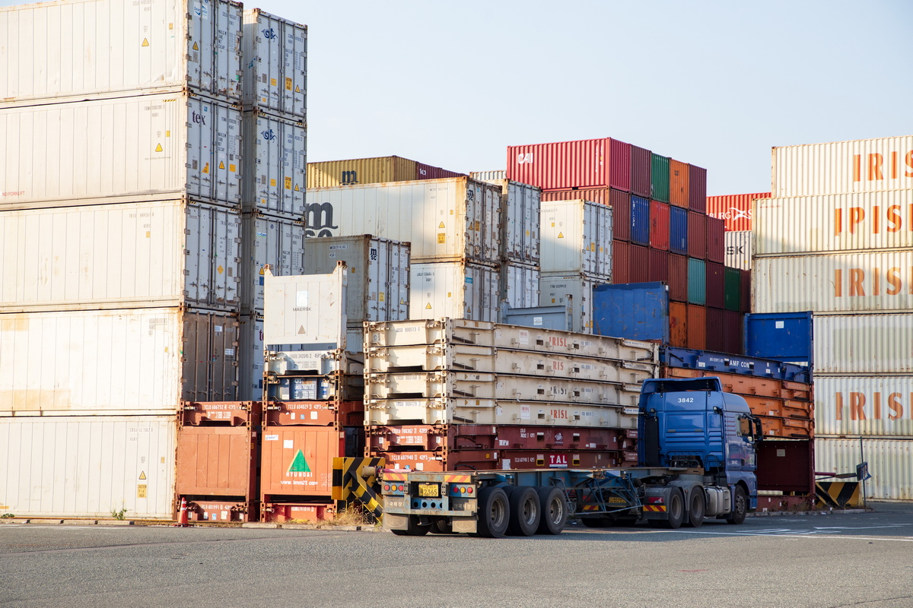
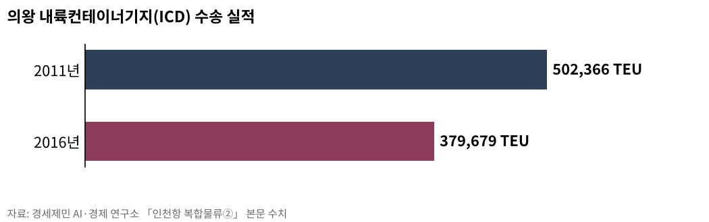

經世濟民 · 두루두루 고루고루 잘 사는 사회
연구 의뢰 032-777-0421
찾기
의뢰·신청하기
전체 자료
정책브리핑
해양
항공
철도
복합물류
도시계획·부동산
기후위기
경제
AI
연구소
복합물류
물류산업·복합물류·AI물류 · 공개 자료 3편
← 복합물류 전체 보기
인천항 복합물류
3

인천항 복합물류
3편
서류 한 장이 배와 철도와 트럭을 묶는다
인천항 복합물류
3편

[인천항 복합물류②] 인천항을 나서는 화물은 모두 트럭에 오른다
2023년 1월 축항선이 끊기며 인천 지상 화물철도가 사라졌다
26.09.19
[인천항 복합물류①] 서류 한 장이 배와 철도와 트럭을 묶는다
국내 화물은 도로가 92.7%, 국제 화물은 바다가 99.7%를 나른다
26.09.04
세계 최초 1만톤 전기 컨테이너선 中 상업 운항… 인천항 피더는
中 '닝위안뎬쿤' 4월 15일 닝보저우산항에서 자싱항으로 출항
26.04.17